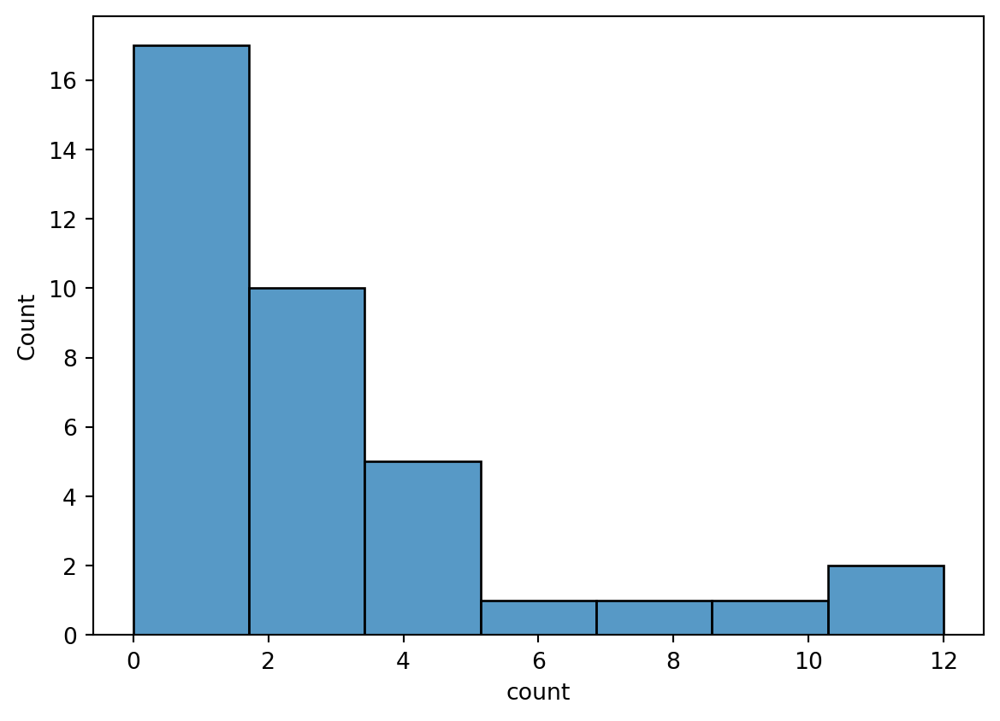
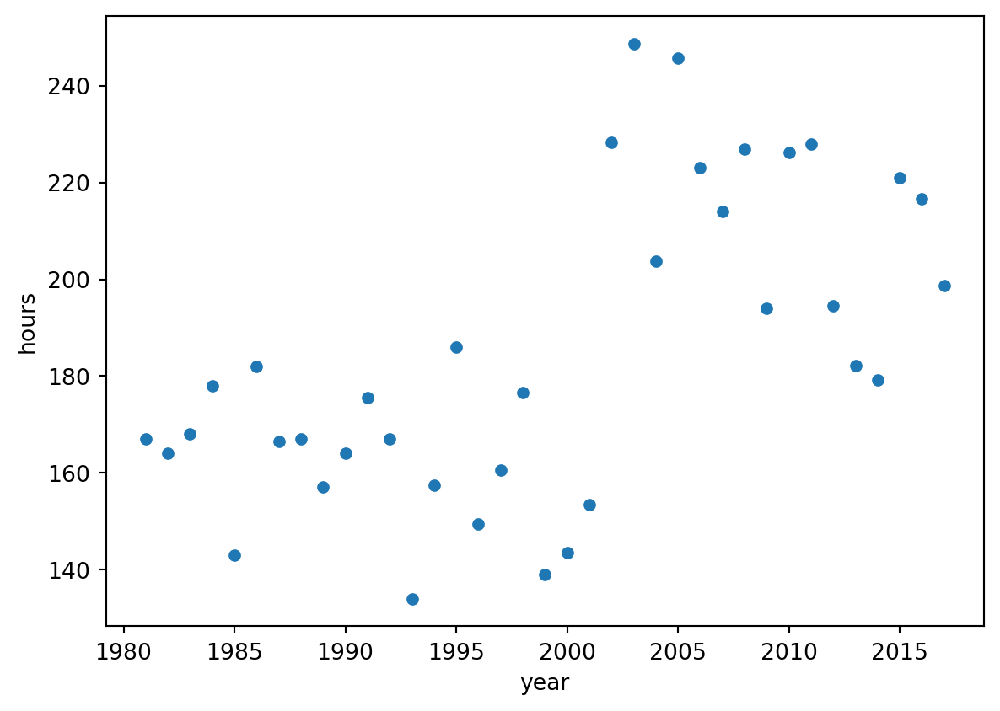
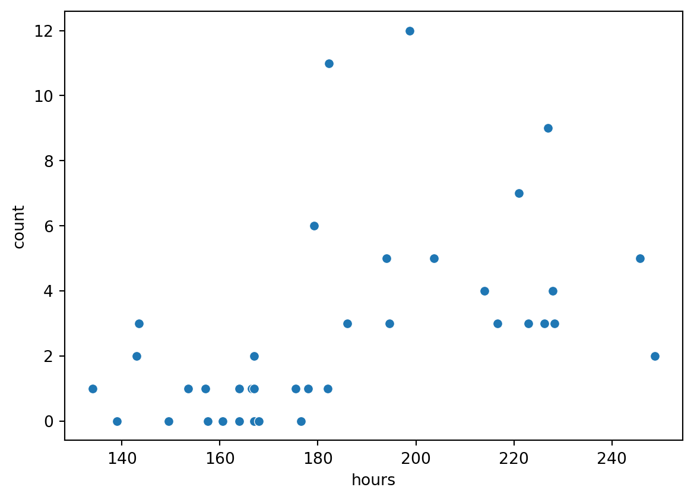
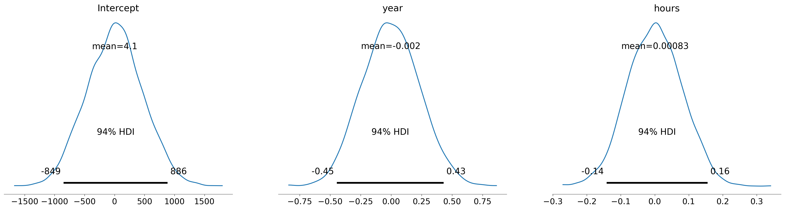
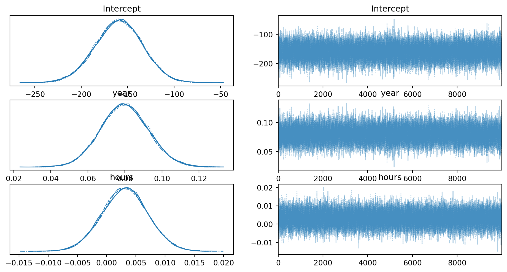
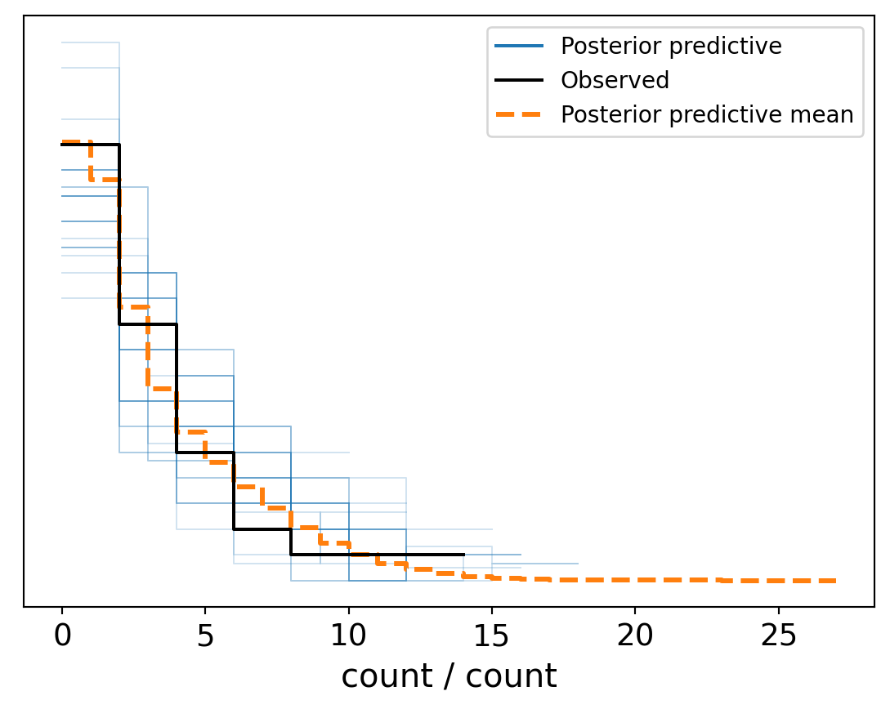
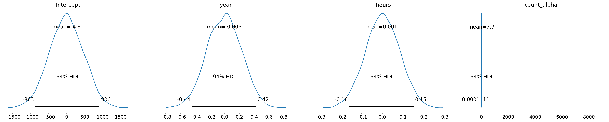
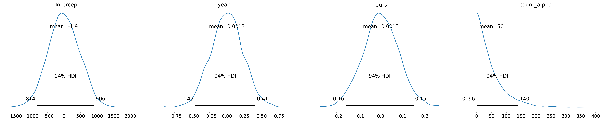
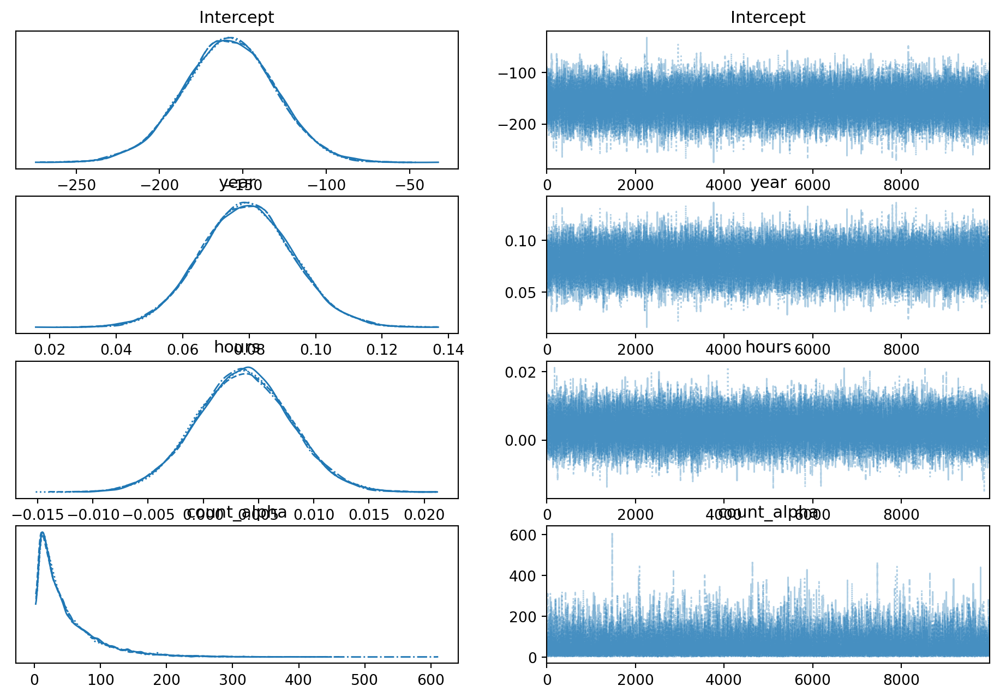
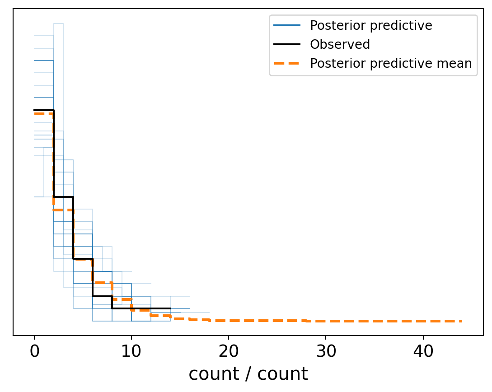

import arviz as az
import pandas as pd
import matplotlib.pyplot as plt
import numpy as np
import pymc as pm
import bambi as bmb
import seaborn as snsChapter 12 exercises.
- testing out doing this as QMD instead of IPYNB. Not sure how well it will work though!
eagles = pd.read_csv('bald_eagles.csv')
eagles.head()| Unnamed: 0 | year | count | hours | count_per_hour | count_per_week | |
|---|---|---|---|---|---|---|
| 0 | 1 | 1981 | 0 | 167.0 | 0.000000 | 0.00000 |
| 1 | 2 | 1982 | 0 | 164.0 | 0.000000 | 0.00000 |
| 2 | 3 | 1983 | 0 | 168.0 | 0.000000 | 0.00000 |
| 3 | 4 | 1984 | 1 | 178.0 | 0.005618 | 0.94382 |
| 4 | 5 | 1985 | 2 | 143.0 | 0.013986 | 2.34965 |
eagles.describe()| Unnamed: 0 | year | count | hours | count_per_hour | count_per_week | |
|---|---|---|---|---|---|---|
| count | 37.000000 | 37.000000 | 37.000000 | 37.000000 | 37.000000 | 37.000000 |
| mean | 19.000000 | 1999.000000 | 2.810811 | 184.598649 | 0.014266 | 2.396725 |
| std | 10.824355 | 10.824355 | 3.026162 | 31.434797 | 0.015088 | 2.534761 |
| min | 1.000000 | 1981.000000 | 0.000000 | 134.000000 | 0.000000 | 0.000000 |
| 25% | 10.000000 | 1990.000000 | 1.000000 | 164.000000 | 0.005618 | 0.943820 |
| 50% | 19.000000 | 1999.000000 | 2.000000 | 178.000000 | 0.011976 | 2.011976 |
| 75% | 28.000000 | 2008.000000 | 4.000000 | 214.000000 | 0.018692 | 3.140187 |
| max | 37.000000 | 2017.000000 | 12.000000 | 248.750000 | 0.060377 | 10.143396 |
Exercise 12.5
- Look at count independant of the rest
sns.histplot(eagles['count'])<AxesSubplot:xlabel='count', ylabel='Count'>
- Count vs year
sns.scatterplot(data = eagles, x = 'year', y= 'count')<AxesSubplot:xlabel='year', ylabel='count'>
It does appear that the variance gets bigger as years go on, so a poissoin distribution could be tried.
- Observation periods vary from year to year, from 134 to 248 hours.
sns.scatterplot(data = eagles, x = 'year', y= 'hours')<AxesSubplot:xlabel='year', ylabel='hours'>
It looks like the spread in hours is rather uniform, but also that there is a jump around 2004, so that it is not independant of the year.
sns.scatterplot(data = eagles, x = 'hours', y= 'count')<AxesSubplot:xlabel='hours', ylabel='count'>
This tells us that hours have an (expected!) effect on the counts, so we will need to include (control for) that in our models.
Exercise 12.7
model1 = bmb.Model('count ~ year + hours', eagles, family='poisson')
model1.build()
model1.plot_priors()array([<AxesSubplot:title={'center':'Intercept'}>,
<AxesSubplot:title={'center':'year'}>,
<AxesSubplot:title={'center':'hours'}>], dtype=object)
Quarto issue
Needs cores=1 to avoid broken pipe error.
results1 = model1.fit(draws=10000, chains=4,cores=1)
az.plot_trace(results1)
az.summary(results1)Auto-assigning NUTS sampler...Initializing NUTS using jitter+adapt_diag...Sequential sampling (4 chains in 1 job)NUTS: [Intercept, year, hours]
100.00% [11000/11000 00:13<00:00 Sampling chain 0, 0 divergences]
/Users/ronaldlegere/opt/anaconda3/envs/BayesRules/lib/python3.7/site-packages/scipy/stats/_continuous_distns.py:624: RuntimeWarning: overflow encountered in _beta_ppf
return _boost._beta_ppf(q, a, b)
100.00% [11000/11000 00:12<00:00 Sampling chain 1, 0 divergences]
100.00% [11000/11000 00:12<00:00 Sampling chain 2, 0 divergences]
100.00% [11000/11000 00:12<00:00 Sampling chain 3, 0 divergences]
Sampling 4 chains for 1_000 tune and 10_000 draw iterations (4_000 + 40_000 draws total) took 52 seconds.| mean | sd | hdi_3% | hdi_97% | mcse_mean | mcse_sd | ess_bulk | ess_tail | r_hat | |
|---|---|---|---|---|---|---|---|---|---|
| Intercept | -159.408 | 25.632 | -207.358 | -111.099 | 0.174 | 0.123 | 21738.0 | 23496.0 | 1.0 |
| year | 0.080 | 0.013 | 0.055 | 0.104 | 0.000 | 0.000 | 21706.0 | 23293.0 | 1.0 |
| hours | 0.003 | 0.004 | -0.004 | 0.011 | 0.000 | 0.000 | 24288.0 | 24266.0 | 1.0 |

Diagnostics look good, so moving on to look at the posterior check>
model1.predict(results1, kind='pps', inplace= True)
az.plot_ppc(results1, num_pp_samples = 30)<AxesSubplot:xlabel='count / count'>
This looks quite good to me.
Exercise 12.8
model2 = bmb.Model('count ~ year + hours', eagles, family='negativebinomial')
model2.build()
model2 Formula: count ~ year + hours
Family name: Negativebinomial
Link: log
Observations: 37
Priors:
Common-level effects
Intercept ~ Normal(mu: 0, sigma: 468.302)
year ~ Normal(mu: 0.0, sigma: 0.2341)
hours ~ Normal(mu: 0.0, sigma: 0.0806)
Auxiliary parameters
alpha ~ HalfCauchy(beta: 1)model2.plot_priors()array([<AxesSubplot:title={'center':'Intercept'}>,
<AxesSubplot:title={'center':'year'}>,
<AxesSubplot:title={'center':'hours'}>,
<AxesSubplot:title={'center':'count_alpha'}>], dtype=object)
I am not too sure what bambi is doing with alpha prior here, so once again i will use my own exponential prior
alpha_prior = bmb.Prior('Exponential', lam= 1/50.)
model2 = bmb.Model('count ~ year + hours', eagles, family='negativebinomial',priors = {'alpha': alpha_prior})
model2.build()
model2 Formula: count ~ year + hours
Family name: Negativebinomial
Link: log
Observations: 37
Priors:
Common-level effects
Intercept ~ Normal(mu: 0, sigma: 468.302)
year ~ Normal(mu: 0.0, sigma: 0.2341)
hours ~ Normal(mu: 0.0, sigma: 0.0806)
Auxiliary parameters
alpha ~ Exponential(lam: 0.02)model2.plot_priors()array([<AxesSubplot:title={'center':'Intercept'}>,
<AxesSubplot:title={'center':'year'}>,
<AxesSubplot:title={'center':'hours'}>,
<AxesSubplot:title={'center':'count_alpha'}>], dtype=object)
results2 = model2.fit(draws=10000, chains=4,cores=1)
az.plot_trace(results2)
az.summary(results2)Auto-assigning NUTS sampler...Initializing NUTS using jitter+adapt_diag...Sequential sampling (4 chains in 1 job)NUTS: [Intercept, year, hours, count_alpha]
100.00% [11000/11000 00:20<00:00 Sampling chain 0, 0 divergences]
/Users/ronaldlegere/opt/anaconda3/envs/BayesRules/lib/python3.7/site-packages/scipy/stats/_continuous_distns.py:624: RuntimeWarning: overflow encountered in _beta_ppf
return _boost._beta_ppf(q, a, b)
100.00% [11000/11000 00:20<00:00 Sampling chain 1, 0 divergences]
100.00% [11000/11000 00:18<00:00 Sampling chain 2, 0 divergences]
100.00% [11000/11000 00:21<00:00 Sampling chain 3, 0 divergences]
Sampling 4 chains for 1_000 tune and 10_000 draw iterations (4_000 + 40_000 draws total) took 82 seconds.| mean | sd | hdi_3% | hdi_97% | mcse_mean | mcse_sd | ess_bulk | ess_tail | r_hat | |
|---|---|---|---|---|---|---|---|---|---|
| Intercept | -158.513 | 27.672 | -210.555 | -106.249 | 0.159 | 0.114 | 30448.0 | 25905.0 | 1.0 |
| year | 0.079 | 0.014 | 0.053 | 0.106 | 0.000 | 0.000 | 30341.0 | 25993.0 | 1.0 |
| hours | 0.004 | 0.004 | -0.005 | 0.011 | 0.000 | 0.000 | 34600.0 | 28094.0 | 1.0 |
| count_alpha | 48.034 | 46.467 | 1.993 | 132.671 | 0.258 | 0.184 | 33093.0 | 30394.0 | 1.0 |

Diagnostics look good, so moving on to look at the posterior check>
model2.predict(results2, kind='pps', inplace= True)
az.plot_ppc(results2, num_pp_samples = 30)<AxesSubplot:xlabel='count / count'>
Not sure it was worth all that extra trouble. Perhaps I am missing something, because the count has a mean that is close to the standard deviation (across all years and hours).
Based on this year and hours are both significant, but year is clearly the stronger predictor.
Lets grab the raw samples so i can compute directly the quantile for the year coefficient.
year_coeff_samples = results2.posterior.year.values.flatten()
np.quantile(year_coeff_samples,[.025,.975])array([0.0520712 , 0.10745111])